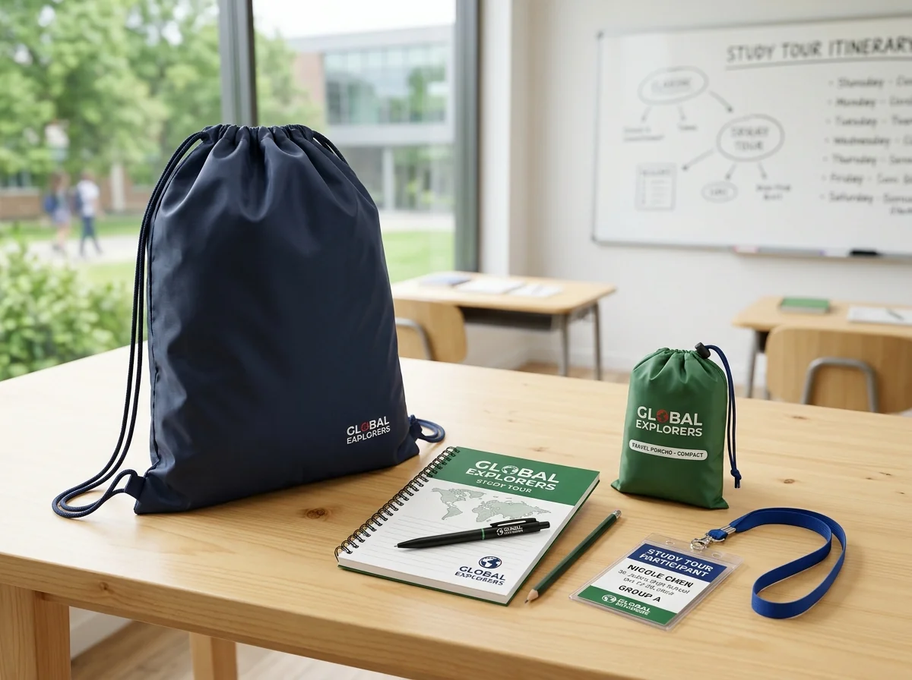

Ide Isi Goodie Bag Study Tour yang Berguna untuk Siswa

Isi goodie bag study tour sebaiknya berupa perlengkapan yang membantu siswa mencatat, menjaga kenyamanan perjalanan, dan menyimpan barang kecil tanpa membuat tas terlalu berat.
📌 Ringkasan Inti Panduan:
- Pilih isian berdasarkan agenda kunjungan dan daftar barang yang sudah disediakan sekolah.
- Utamakan notebook, alat tulis, botol minum, atau pouch bila memang dibutuhkan siswa.
- Bedakan kebutuhan kunjungan belajar dalam ruangan dengan aktivitas luar ruang.
- Hindari barang terlalu berat, mudah pecah, atau tidak sesuai kebijakan sekolah.
1. Mengapa Isi Goodie Bag Study Tour Perlu Dikurasi?
Isi goodie bag study tour perlu dipilih dengan sengaja karena peserta akan membawanya selama kegiatan, sehingga setiap barang seharusnya memiliki kegunaan yang jelas.
Paket sering dianggap semakin menarik jika isinya semakin banyak. Dalam kenyataan, barang tambahan dapat menyulitkan siswa, terutama saat berjalan, berpindah lokasi, atau masuk kendaraan. Memilih barang berdasarkan fungsi membantu menjaga bobot tas dan memudahkan panitia menjelaskan tujuan setiap perlengkapan.
Materi perencanaan souvenir menekankan empat prinsip: fungsi, ketahanan, kemudahan membawa, dan identitas yang sesuai. Untuk study tour, prinsip tersebut dapat diterjemahkan menjadi pertanyaan sederhana: apakah barang ini digunakan saat acara, setelah acara, atau sama sekali tidak diperlukan?
2. Apa Saja Perlengkapan yang Paling Relevan untuk Study Tour?
Perlengkapan inti goodie bag study tour biasanya berhubungan dengan aktivitas belajar, kebutuhan minum, serta penyimpanan benda kecil selama perjalanan sekolah.
Notebook atau buku catatan kecil
Notebook membantu siswa menulis hasil observasi, pertanyaan kepada narasumber, atau ringkasan kunjungan. Pilih ukuran yang mudah masuk tas dan tidak terlalu berat. Jika sekolah sudah menyediakan lembar kerja khusus, buku tambahan mungkin tidak diperlukan.
Pulpen, pensil, atau alat tulis sederhana
Alat tulis berguna jika peserta harus menulis selama kunjungan. Pertimbangkan satu alat tulis yang berfungsi baik daripada beberapa benda dekoratif. Untuk anak yang lebih muda, pilihan alat tulis perlu mengikuti kebiasaan dan arahan guru.
Botol minum yang sesuai kebutuhan
Botol minum dapat membantu siswa membawa air sendiri, asalkan ukuran, bahan, dan sistem tutupnya cocok. Pastikan botol tidak mudah bocor di dalam tas bersama notebook. Jika peserta sudah diminta membawa botol dari rumah, panitia dapat mengalihkan dana ke kebutuhan lain.
Pouch kecil untuk barang mudah tercecer
Pouch cocok untuk alat tulis, kabel, atau kebutuhan pribadi berukuran kecil. Pilih penutup yang tidak mudah terbuka. Untuk siswa usia sekolah dasar, hindari komponen lepas yang kecil bila tidak sesuai kondisi kelompok peserta.
Kartu informasi perjalanan
Kartu berisi agenda ringkas, titik kumpul, atau arahan umum dapat membantu perjalanan. Untuk kartu yang memuat identitas dan nomor kontak, ikuti aturan sekolah mengenai privasi dan hindari menampilkan informasi pribadi secara terbuka tanpa kebutuhan.
Perlengkapan pelindung cuaca sesuai kegiatan
Untuk perjalanan luar ruang, topi atau jas hujan lipat mungkin relevan. Penentuan barang sebaiknya berdasarkan lokasi, musim, dan agenda. Jangan menjadikan semua perlengkapan luar ruang sebagai isi wajib untuk kunjungan dalam ruangan.
3. Bagaimana Memilih Isi untuk Siswa SD, SMP, dan SMA?
Kebutuhan goodie bag menurut jenjang sekolah dapat berbeda pada ukuran barang dan jenis tugas, tetapi tetap harus ditentukan dari usia, agenda, dan pengawasan peserta.
| Kelompok Peserta | Contoh Kebutuhan | Pertimbangan Utama |
|---|---|---|
| Siswa SD | Pensil/alat tulis ramah anak, kartu aktivitas, botol minum | Bobot ringan, mudah dipakai, keamanan komponen |
| Siswa SMP | Notebook saku, pulpen gel, pouch serbaguna | Kebutuhan mencatat mandiri dan menyimpan barang pribadi |
| Siswa SMA / SMK | Notebook observasi, alat tulis lengkap, kartu identitas | Fleksibilitas untuk studi lapangan dan dokumentasi tugas |
4. Contoh Paket Berdasarkan Agenda Study Tour
Paket yang relevan untuk kunjungan museum dapat berbeda dari paket untuk kegiatan alam karena bentuk aktivitas dan kondisi pemakaian perlengkapannya tidak sama.

Paket observasi museum: dapat berisi notebook kecil, satu alat tulis, lembar kegiatan, dan botol minum. Untuk menjaga kerapian, pilih tas yang memuat buku tanpa menekuknya.
Paket kunjungan industri atau kampus: dapat menekankan notebook, pulpen, dan identitas peserta sesuai kebijakan penyelenggara. Tidak perlu memasukkan perangkat berlebih jika kegiatan tidak membutuhkan.
Paket wisata edukasi luar ruang: dapat mengutamakan botol minum, pouch, dan perlengkapan pelindung cuaca yang sesuai. Pastikan tas mudah dibawa dalam perjalanan dan barang tidak mudah tumpah.
5. Bagaimana Menghindari Isi yang Jarang Digunakan?
Cara menghindari isian tidak berguna adalah menguji setiap barang terhadap agenda, usia peserta, berat bawaan, dan kemungkinan pemanfaatan setelah kegiatan selesai.
Sebelum memesan, buat tiga kolom: barang wajib, barang opsional, dan barang tidak diperlukan. Misalnya, buku catatan menjadi wajib bila kegiatan memiliki tugas observasi. Sebaliknya, dua jenis botol minum tidak perlu diberikan bersamaan hanya karena tersedia dalam katalog.
Perhatikan juga barang mudah pecah. Mug keramik mungkin cocok sebagai souvenir formal, tetapi dapat menyulitkan siswa ketika harus berpindah lokasi sambil membawa tas. Untuk makanan ringan, cek aturan sekolah, kebutuhan alergi, masa simpan, dan suhu penyimpanan.
6. Bagaimana Menghitung Jumlah dan Anggaran Isi Paket?
Jumlah isian goodie bag study tour ditentukan dari peserta yang menerima paket, isi per orang, serta cadangan yang disetujui sesuai kondisi acara.
Contoh perhitungan sederhana: apabila ada 120 peserta dan setiap paket memuat satu notebook serta satu pulpen, kebutuhan dasar adalah 120 notebook dan 120 pulpen. Bila panitia memutuskan menyiapkan lima paket cadangan, masing-masing barang perlu tersedia sebanyak 125 unit.
Untuk anggaran, hitung biaya setiap benda termasuk personalisasi jika ada. Jumlahkan biaya tas, isi, kemasan, proses cetak, dan pengiriman. Sediakan pos penggantian barang cacat sesuai kesepakatan dengan vendor.
7. Bagaimana Menyesuaikan Isi dengan Ukuran dan Bahan Tas?
Isi goodie bag perlu diuji bersama ukuran dan bahan tas agar semua barang muat, tersusun rapi, serta nyaman dibawa selama perjalanan siswa.
Letakkan seluruh perlengkapan di meja, ukur barang terbesar, lalu coba beberapa susunan. Notebook idealnya tidak tertekuk, botol tidak menekan benda rapuh, dan pouch tidak membuat tas terlalu menggembung. Ukuran lipatan alas dapat menentukan apakah botol atau kotak makan bisa diletakkan stabil. Baca panduan mendalam pada pilihan bahan tas study tour dan panduan ukuran goodie bag sekolah.
8. FAQ Isi Goodie Bag Study Tour
9. Kesimpulan Praktis
Isi goodie bag study tour sebaiknya menjawab kebutuhan yang nyata selama perjalanan, bukan mengejar jumlah produk. Mulai dari daftar kegiatan, cek barang yang sudah dimiliki siswa, pilih perlengkapan berguna, lalu uji paket terisi. Untuk gambaran besar proses pemilihan, baca panduan lengkap goodie bag study tour.

Ditulis oleh Devaliana Tensa
Praktisi konveksi tas, garment merchandiser, dan founder workshop Goodie Bag Malang dengan pengalaman lebih dari 8 tahun dalam produksi tas seminar, goodie bag pameran, dan suvenir custom korporat di Indonesia.
Artikel Terkait Seputar Tas Study Tour Sekolah